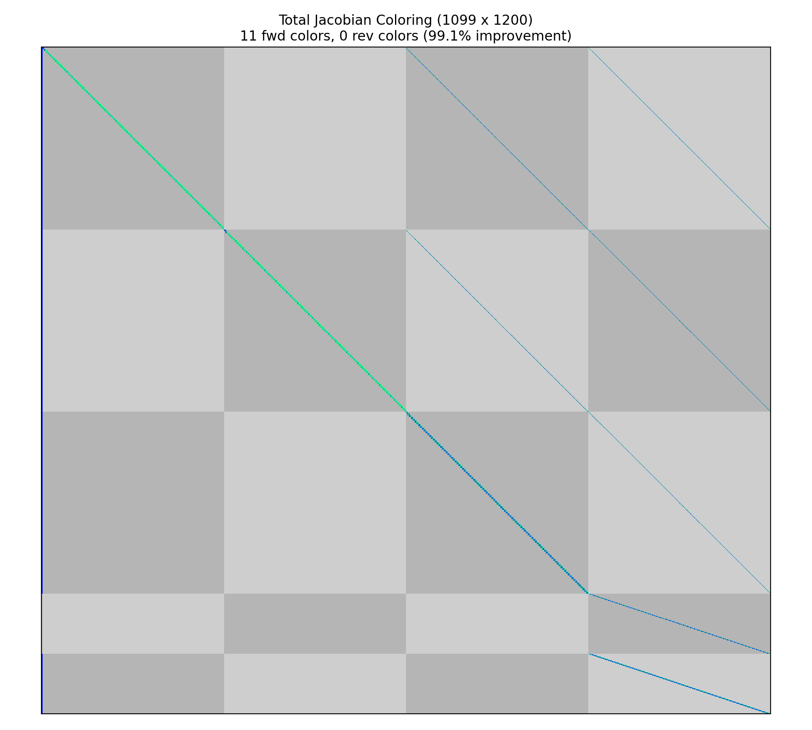
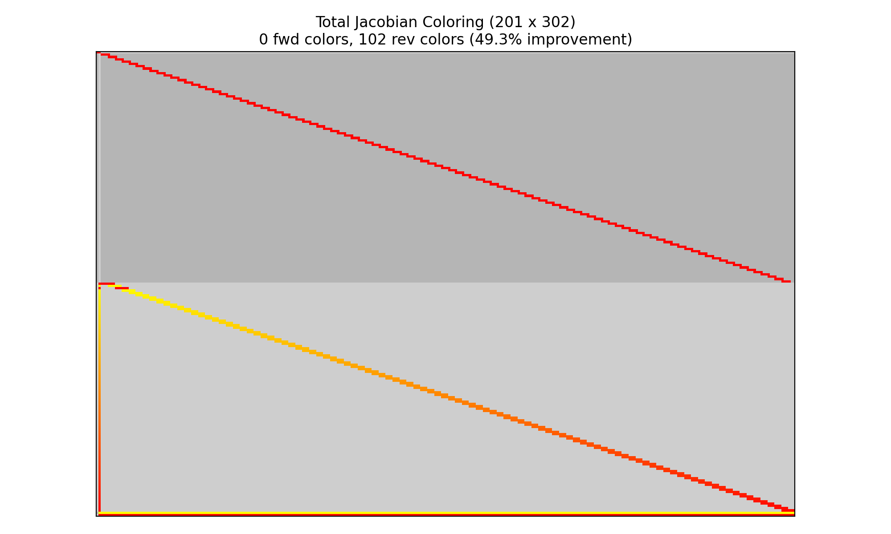

Exploiting Sparsity for Faster Derivative Calculation¶
A key feature of collocation algorithms such as high-order Gauss-Lobatto collocation or the Radau pseudospectral method is that they exhibit a large degree of sparsity in the total Jacobian. By modeling the state-time histories as a series of polynomial segments, the collocation defect constraints within each segment are largely dependent only on the state and control values within the same segment. Pseudospectral optimization tools such as SOCS, OTIS, and GPOPS-II have long used the notion of sparse finite differences to perturb multiple independent variables simultaneously when approximating the constraint Jacobian. This can significantly reduce the computational effort required to approximate the entire Jacobian via finite difference.
The unique way in which OpenMDAO assembles analytic derivatives across the problem allows us to use a similar approach to provide the analytic constraint Jacobian. This approach can reduce the time required to solve moderately-sized optimal control problems by orders of magnitude and make the convergence more robust.
OpenMDAO uses a "coloring" algorithm to determine which variables can be perturbed simultaneously to determine the total constraint Jacobian. Variables in the same "color" each impact a unique constraint, such that when all the variables are perturbed we can be assured that any change in the constraint vector is due to at most one scalar variable. Since OpenMDAO uses a linear solver to assemble to total derivative Jacobian, coloring reduces the number of linear solves from one per variable (or constraint in adjoint mode) to one per color. In the brachistochrone example below this reduces the number of linear solves from 1001 to 9. This capability makes problems of moderate size run orders of magnitude faster, and can make intractably large problems tractable.
Note
While some optimizers (SNOPT and IPOPT) are particularly adept at dealing with large, sparse nonlinear programming problems, coloring can still benefit drivers which do not account for sparsity (such as SLSQP) since it significantly reduces the cost of computing the Jacobian.
Step 1: Using OpenMDAO's Coloring Capability¶
OpenMDAO supports dynamic coloring, meaning it can automatically run the Jacobian coloring algorithm before handing the problem to the optimizer. To enable this capability, simply add the following line to the driver.
driver.declare_coloring()
By default the coloring algorithm will attempt to determine the sparsity pattern of the total jacobian by filling the partial jacobian matrices with random noise and searching for nonzeros in the resulting total jacobian. At times this might report that it failed to converge on a number of nonzero entries. This is due to the introduction of noise during the matrix inversion by the system's linear solver. This can be remedied by using a different linear solver, such as PETScKrylov, or by telling the coloring algorithm to accept a given tolerance on the nonzero elements rather than trying to determine it automatically. This can be accomplished with the following options to declare coloring:
driver.declare_coloring(tol=1.0E-12, orders=None)
Setting orders to None prevents the automatic tolerance detection.
The value of tol is up to the user.
If it is too large, then some nonzero values will erroneously be determined to be zeros and the total derivative will be incorrect.
If tol is too small then the sparsity pattern may be overly conservative and degrade performance somewhat.
We recommend letting the coloring algorithm detect the sparsity automatically and only resorting to a fixed tolerance if necessary.
Running the coloring algorithm separately¶
OpenMDAO supports the ability to run the coloring algorithm "offline" and then provide the data to the driver via a saved file. This is potentially useful to users whose model is particularly expensive to color, and whom aren't changing the problem structure between runs.
Note
Adding or removing constraints, controls, states, or parameters, as well as changing the objective variable or changing the grid will all affect the fundamental size of the optimization problem and therefore will require a new coloring. Simply changing constraint bounds or scaling on variables and constraints will not fundamentally change the size of the problem and will therefore not require a recoloring.
The use_static_coloring Driver method in OpenMDAO is documented here.
Viewing the sparsity¶
The summary of the sparsity pattern can be obtained following a run with the OpenMDAO command line view_coloring utility.
openmdao view_coloring coloring_files/total_coloring.pkl
coloring_files/total_coloring.pkl file is automatically generated in the run directory by OpenMDAO when coloring is used.
For this example, the Brachistochrone example is used with 100 3rd-order segments in the Radau transcription.
The output is:
Jacobian shape: (1099, 1200) ( 0.54% nonzero)
FWD solves: 11 REV solves: 0
Total colors vs. total size: 11 vs 1200 (99.1% improvement)
Sparsity computed using tolerance: 1e-08
Time to compute sparsity: 1.706023 sec.
Time to compute coloring: 0.038774 sec.
In addition, adding the --view flag to the command will generate a visualization of the sparsity using matplotlib.
The gray checkerboard represents the vectorized variables (columns) and constraints (rows).
In this case, the column groupings correspond t_duration, followed by the states x, y, and v, and finally the control theta.
The rows groupings correspond to the state defects on x, y, and v, followed by the theta control value continuity constraints and the theta control rate continuity constraints.
The ordering of these variables and constraints is the same as output by the pyOptSparseDriver.
In this case we can see that there is a single dense column on the left. This is the phase duration, which impacts all of the defect constraints in the problem.

Reverse-mode coloring¶
Pseudospectral optimal control problems often have roughly equal numbers of constraints and design variables. As a result, there's doesn't tend to be a significant increase in performance by using adjoint (reverse) differentiation.
In Dymos, when the solve_segments flag on a state or transcription is used, an underlying nonlinear solver is used to satisfy the constraint defects.
The optimizer only controls the initial or final state values in a phase as the design variables, and the solver is responsible for satisfying the corresponding state collocation defects.
As a result, the problem is effectively transformed into a shooting problem (single shooting when compressed transcription is used, or multiple shooting when it is not).
These problems tend to exhibit many more design variables than constraints, and thus adjoint differentiation can be advantageous.
Fortunately, the coloring algorithm used in OpenMDAO automatically detects this and colors the problem in reverse mode.
If we run the 100-segment Radau brachistochrone problem with solve_segments=True (taking care to replace the terminal state bounds with nonlinear boundary constraints), the following coloring is obtained:
Jacobian shape: (201, 302) ( 2.79% nonzero)
FWD solves: 0 REV solves: 102
Total colors vs. total size: 102 vs 201 (49.3% improvement)
Sparsity computed using tolerance: 1e-25
Time to compute sparsity: 0.414226 sec.
Time to compute coloring: 0.017739 sec.

In this case, the majority of the constraints pertain to the control value and rate continuity.
The majority of the design variables are the control values at the control input nodes.
There are two dense rows at bottom are the nonlinear boundary constraints on x and y.
The entirety of the control history impacts these values in a shooting formulation.
Performance comparison with and without simultaneous derivatives¶
In comparison, the 100-segment, Radau-based brachistochrone problem without coloring solves in roughly two minutes with a 2.4 GHz Intel Core i9 processor using the IPOPT optimizer. While computing the sensitivity itself takes only 16 seconds, the large amount of data being used to store knowably-zero quantities is quite large, which results in a lot of time spent in the optimizer dealing with that data.
For the solve_segments case, we see that it significantly reduces the size of the problem from the optimizer's perspective, driving the optimization time down significantly.
The additional cost of solving the collocation problem with a Newton solver is reflected in the somewhat greater objective and sensitivity time compared to the nominal case.
The key takeaways from the following table are:
- Optimizer-driven pseudospectral approaches rely on the exploitation of sparsity to be efficient
- Shooting approaches, when numerically appropriate, can be reasonably competitive with pseudospectral approaches under adjoint differentiation.
| With Dynamic Coloring | Without Coloring | solve_segments With Coloring |
solve_segments Without Coloring |
|
|---|---|---|---|---|
| Total Time | 1.5692 | 127.9437 | 2.2911 | 4.6551 |
| User Objective Time | 0.0510 | 0.0957 | 0.4937 | 0.6104 |
| User Sensitivity Time | 0.6618 | 16.5347 | 1.6315 | 2.9759 |
| Interface Time | 0.5668 | 2.1390 | 0.1016 | 0.1558 |
| Opt Solver Time | 0.2896 | 109.1743 | 0.0643 | 0.9129 |
| Calls to Objective Function | 24 | 28 | 23 | 23 |
| Calls to Sens Function | 24 | 28 | 23 | 23 |
Performance aside, there are other factors to consider when choosing between shooting methods or optimizer-driven pseudospectral approaches. Primarily, the shooting methods propagate the entirety of the trajectory at each iteration. If there are singularities in the equations of motion, and a given control profile causes the propagation to encounter a singularity, the solver will fail to converge and it can stall the entire solution process. Optimizer-driven approaches can better avoid these issues because the trajectory is not required to be physically realizable at each iteration.
Use of Components with Finite-Differencing in the ODE¶
Check out this page to learn more about how to more efficiently use finite-differencing in ODE components.